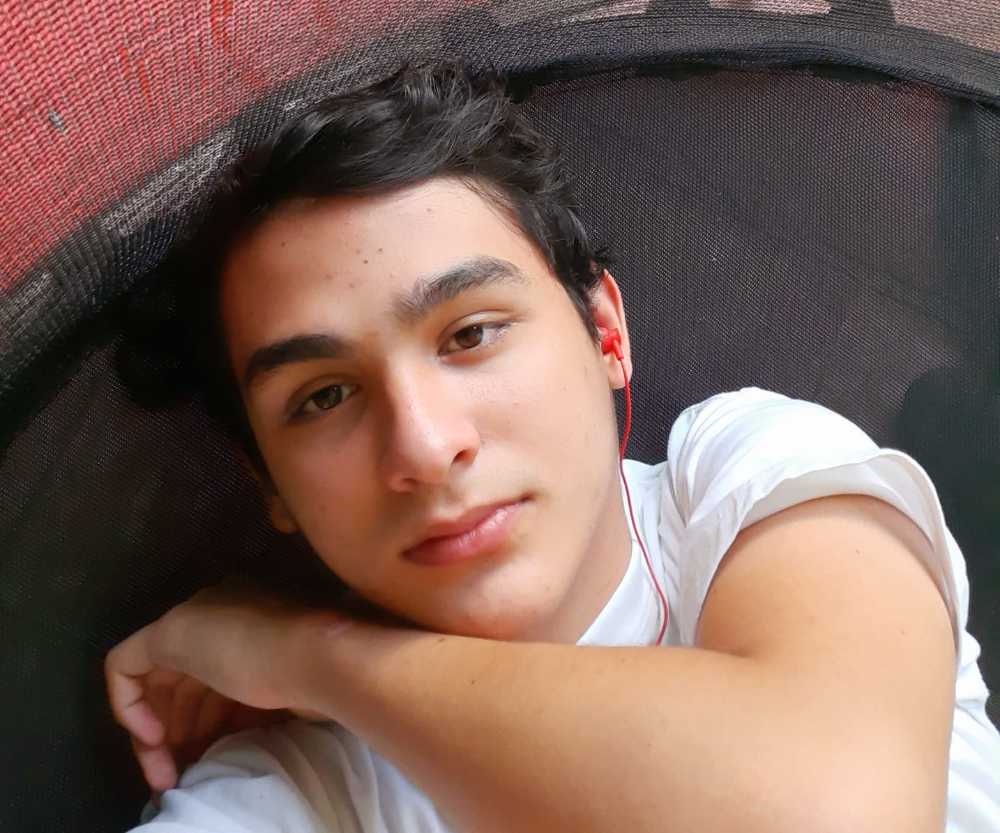

En Kuni estamos comprometidos en trabajar con el Trastorno del Espectro Autista (TEA) y los Desórdenes Sensoriales mediante productos interactivos. Te invitamos a seguir explorando la página para que descubras más del trabajo de Kuni
Aoi
Aoi es una niña que se encuentra dentro del TEA, sin diagnosticar, por eso sufre de mucha incomprensión de su familia. Aoi viaja al bosque de los Kunis, criaturas que están más conectadas a sus sentidos. Ellos ayudan a Aoi a entenderse mejor y buscar soluciones de autorregulación en momentos de crisis.

Taro
Taro es el Kuni más sensible al sentido del tacto, por eso disfruta mucho el sentir el pasto bajo sus pies, el agua pasando por sus manitas, y la brisa en su rostro. Este le enseña a Aoi a concentrarse en los estímulos táctiles que le pueden generar sensaciones relajantes al tacto, permitiendo que se relaje.

Vizu
Vizu es el Kuni más sensible al sentido de la vista, por eso disfruta mucho de ver los atardeceres coloridos, o disfrutar de la bioluminiscencia del bosque. Este le enseña a Aoi a concentrarse en los estímulos visuales que le pueden generar sensaciones relajantes a la vista, permitiendo que se relaje.

Nio
Nio es el Kuni más sensible al sentido del olfato, por eso disfruta mucho de tomar su café en las mañanas y aromatizar su madriguera con ramos de lavanda. Este le enseña a Aoi a concentrarse en los estímulos olfativos que le pueden generar sensaciones relajantes al olfato, permitiendo que se relaje.

Ecos
Ecos es el Kuni más sensible al sentido de la audición, por eso disfruta mucho de escuchar el agua de las cascadas y los pájaros cantando en las mañanas. Este le enseña a Aoi a concentrarse en los estímulos auditivos que le pueden generar sensaciones relajantes al oído, permitiendo que se relaje.


¿Quiénes somos?

Aitana González Céspedes
Estudiante de Diseño Gráfico
20 años. Universidad de Costa Rica. aitana.gonzalez.c20@gmail.com

Keyla González Benavides
Estudiante de Diseño Gráfico
20 años. Universidad de Costa Rica. keylalgb08@gmail.com

Valeria Rubí Mora
Estudiante de Diseño Plástico
21 años. Universidad de Costa Rica. valeriarubi225@gmail.com

Keyrin Vanessa Sánchez Flores
Estudiante de Diseño Gráfico
21 años.Universidad de Costa Rica. keyrinvanessasanflo@gmail.com

Jonathan Rodriguez Quesada
Estudiante de Programación Empresarial
21 años.Universidad de Costa Rica. RodriguezQuesadaJonathan@gmail.com